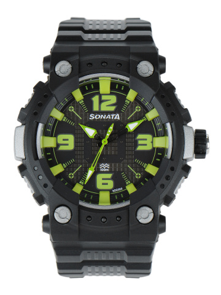
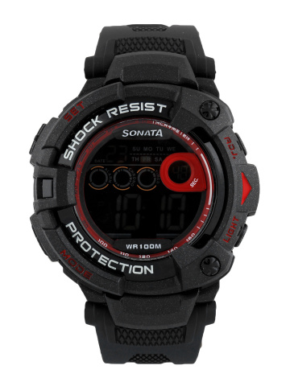
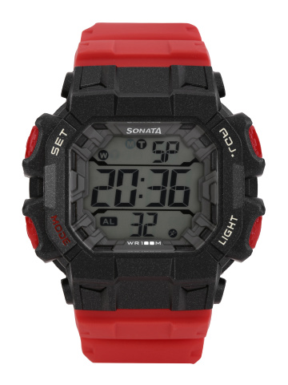
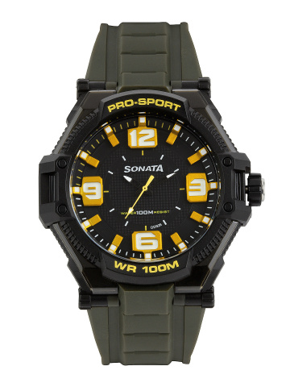
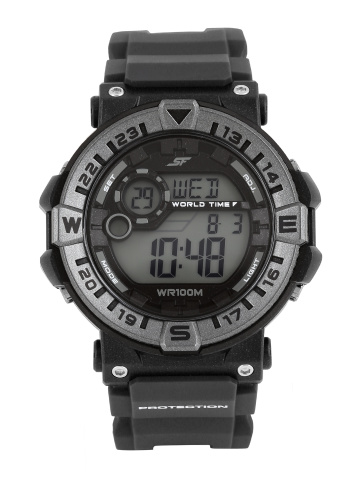
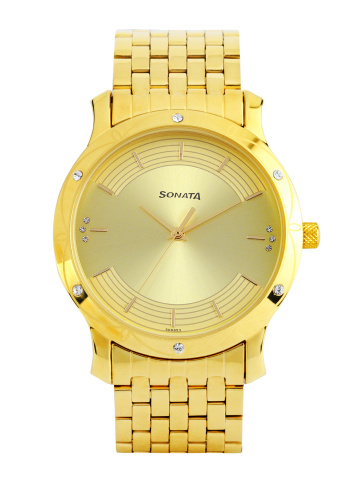
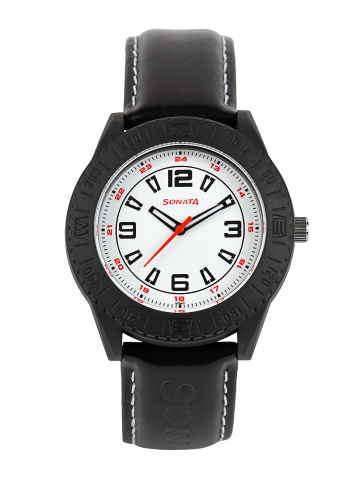
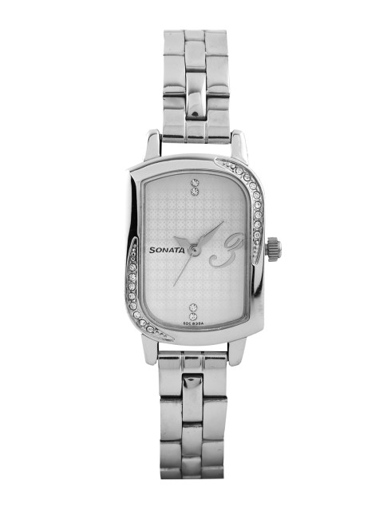
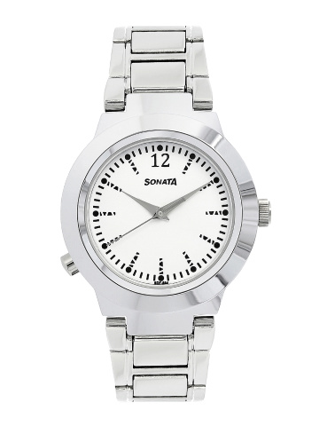

.jpg)
Sonata ( from Latin and Italian: sonare, "to sound"), in music, literally means a piece played as opposed to a cantata (Latin and Italian cantare, "to sing"), a piece sung. The term evolved through the history of music, designating a variety of forms until the Classical era, when it took on increasing importance, and is vague. By the early 19th century, it came to represent a principle of composing large-scale works. It was applied to most instrumental genres and regarded—alongside the fugue—as one of two fundamental methods of organizing, interpreting and analyzing concert music. Though the musical style of sonatas has changed since the Classical era, most 20th- and 21st-century sonatas still maintain the same structure. The term sonatina, pl. sonatine, the diminutive form of sonata, is often used for a short or technically easy sonata. In the Baroque period, a sonata was for one or more instruments almost always with continuo. After the Baroque period most works designated as sonatas specifically are performed by a solo instrument, most often a keyboard instrument, or by a solo instrument accompanied by a keyboard instrument. Sonatas for a solo instrument other than keyboard have been composed, as have sonatas for other combinations of instruments.
Sonata Men Black & Grey Dial Watch 77014PP03JPRODUCT CODE:- SN01 BUY NOW@1399 |
Sonata Men Ocean series II Digital Watch 77010PP02JPRODUCT CODE:- SN02 BUY NOW@1549 |
Sonata Men Red Superfiber Digital Watch NH77025PP02JPRODUCT CODE:- SN03 BUY NOW@1499 |
Sonata Ocean Series Men Black Dial Analogue Watch 77029PP01JPRODUCT CODE:- SN04 BUY NOW@1199 |
Sonata Ocean Series Men Black Digital Watch 77061PP01PRODUCT CODE:- SN05 BUY NOW@1899 |
Sonata Sona Sitara Men Gold-Toned Dial Watch 7107YM04PRODUCT CODE:- SN06 BUY NOW@1999 |
Sonata Unisex White Dial WatchPRODUCT CODE:- SN07 BUY NOW@1299 |
Sonata Women Off-White Dial Watch 87001SM01PRODUCT CODE:- SN08 BUY NOW@1199 |
Sonata Women White Analogue Watch 90057sm01PRODUCT CODE:- SN09 BUY NOW@2999 |